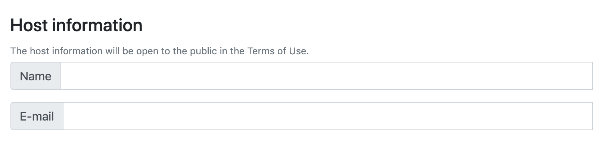
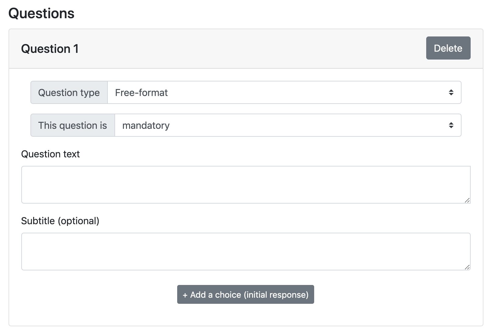
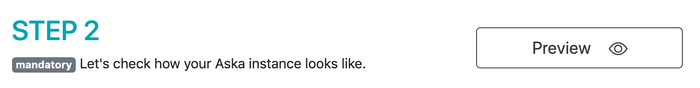
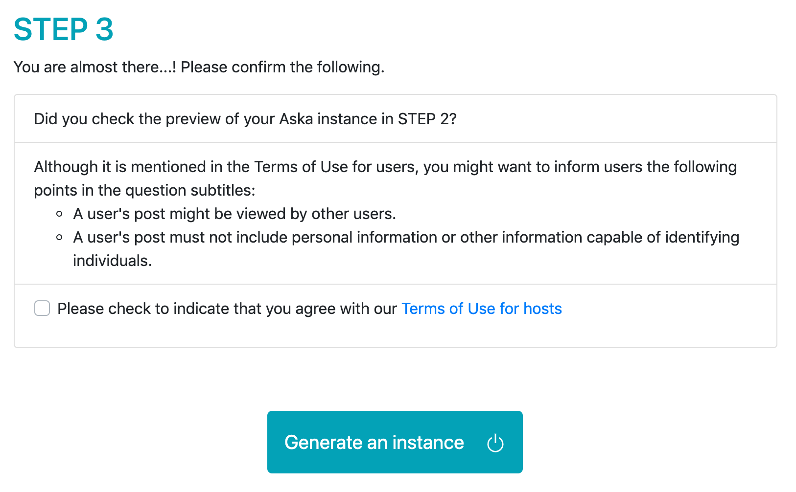
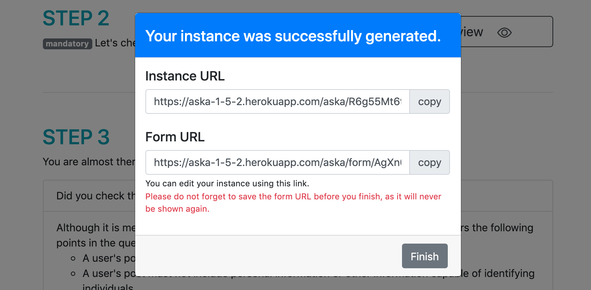

Quick start: Launch a demo¶
The quickest way to learn how Aska works is to launch your own demo instance.
STEP 1: Register host info. & topics (questions)¶
1-1. First, you register the host name and email. Note that these information will be displayed in the Terms of Use. Please refer to Host information for details.
{kind=link}

1-2. The main part. You set the topics (questions). You set the topics of your instance as questions. Although Aska is basically for opinion sharing via free-format texts, you can also set multiple-choice questions. Please refer to Questions fields for details.
{kind=link}

STEP 2: Preview¶
Please click the Preview button, then you can check how your instance would look like.
{kind=link}

Important
This step is mandatory; you cannot generate your instance without checking the preview.
STEP 3: Launch¶
Confirm the list, agree to our terms of use for hosts, and click “Generate an instance” button. Then, the following URLs will be generated:
{kind=link}

After you pushed the “Generate an instance” button, the following links will show up:
{kind=link}

- Instance URL (publicly available URL)
This is the main URL. Please let your users know so that they can participate your Aska instance.
- Generator URL (private URL)
This is a URL for the Aska generator in which your instance information is saved. Not only that you can edit your instance, you can access to Dashboard from here.
Danger
Please do not forget to save the Generator URL, as it will never be displayed again.
Caution
The max. number of responses available is 20 in the DEMO version.
The demo will be expired in 72 hours in the DEMO version.
Tip
Aska project team will manually upgrade your demo instance to activate the corresponding full version.
That’s all for the demo!